1. Set the amount of sunlight your plant will get.

2. How often do you want to water your plant?

3. Do you have pets? Do they chew plants?
No results yet...

Use the filters above to find the plant that best fits your environment :)
 Our picks for you
Our picks for you